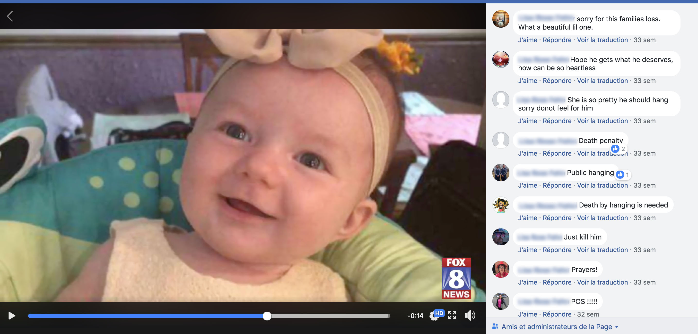
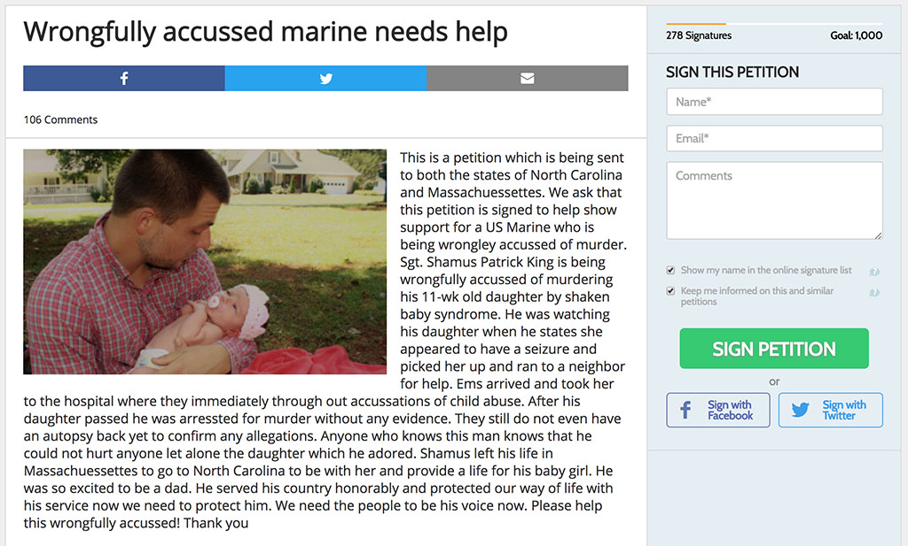
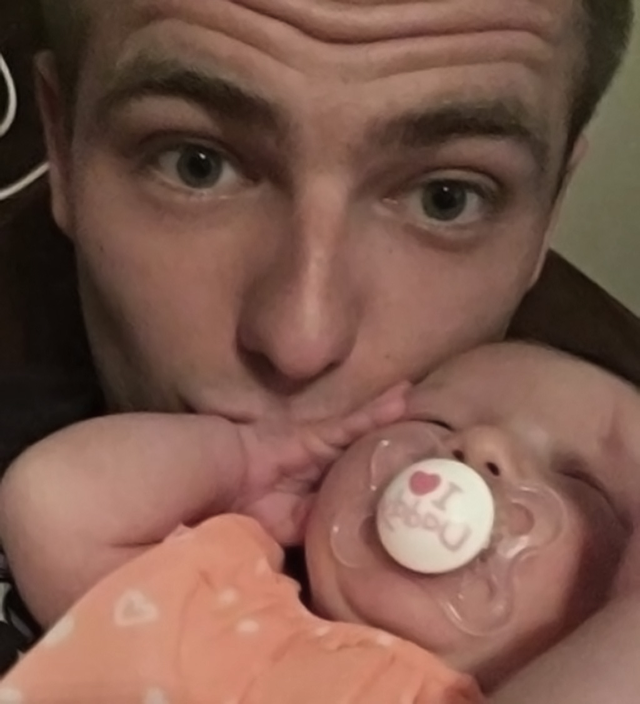

L'histoire que nous vous racontons dans cet article s'est déroulée au cours des derniers mois dans une petite ville des États-Unis, Archdale, en Caroline du Nord.
Cette histoire, c'est celle d'un jeune père et Marine américain, le Sergent Shamus King, 23 ans.
Une histoire de bébé secoué tristement banale
Le 23 septembre 2017, Shamus est seul avec sa fille de 11 semaines prénommée Harper lorsqu'il la retrouve inconsciente, raide, les yeux révulsés. Il la prend dans ses bras et court chercher de l'aide chez ses voisins. Ces derniers entament un massage cardiaque et appellent les secours.
Ensuite, les choses vont très vite. À l'hôpital Wake Forest, les médecins retrouvent des hématomes sous-duraux et des hémorragies rétiniennes, les signes cardinaux du syndrome du bébé secoué. L'enfant décède peu après tandis que le personnel médical prévient la police d'Archdale. À la vue de ces saignements, ils posent immédiatement le diagnostic du syndrome du bébé secoué.
Shamus est alors directement enfermé à la prison du Randolph County sans aucune possibilité de libération conditionnelle.
Les médias locaux relatent cette nouvelle affaire de bébé secoué, une de plus. Ils interrogent la mère de l'enfant, Hannah, dévastée. « Je voudrais savoir pourquoi il a fait cela, pourquoi il a secoué à mort mon petit bébé ? », dit-elle.
Même son de cloche du côté de la tante d'Hannah. « Je voudrais lui dire que j'espère qu'il aura une vie misérable et que nous ne l'oublierons jamais. J'espère qu'il passera le reste de sa vie en prison. »
Quelques jours plus tard, le procureur annonce que Shamus échappera de peu à la peine de mort.
Le père lynché en public sur les réseaux sociaux
Sur les réseaux sociaux, malgré la présomption d'innocence tant que l'homme n'a pas été jugé, les commentaires vont bon train à l'encontre de ce meurtrier présumé, accusé d'avoir assassiné un petit nourrisson sans défense. Comme c'est fréquent dans ces cas-là aux États-Unis, le nom et la photo de Shamus sont diffusés partout dans les médias de la région. Shamus est victime d'un véritable lynchage public.

Pour une certaine Sarah, « il a tué sa propre fille. (...) Il va passer le reste de sa vie en prison, et là-bas ils n'aiment pas les assassins de bébés. J'espère qu'il va souffrir d'une douleur extrême chaque jour de sa vie qu'il passera là-bas. La justice de la prison arrive. » Dom ne dit pas autre chose : « une certaine justice va avoir lieu entre les murs de cette prison. »
« J'espère qu'il aura beaucoup de temps pour penser à ce qu'il a fait à cette magnifique petite fille », dit Marie. James répond : « pourquoi a-t-il besoin d'y penser ? Je dirais plutôt : condamnation et exécution immédiate. »
Matthew dit simplement : « pendaison publique. » Pamela acquiesce : « la mort par pendaison est nécessaire. Pour Greg, « la mort est trop facile. Il doit souffrir pendant longtemps. »
Cette histoire retombe dans l'oubli des médias aussi vite qu'elle est apparue, tandis que Shamus reste en prison.
Une pétition mise en place par les proches pour soutenir le père
Pendant ce temps, Shamus ne cesse de clamer son innocence. Il maintiendra toujours sa version des faits : il a retrouvé l'enfant inconscient, il l'a emmenée chez les voisins, et les secours sont venus. Il n'y a jamais eu de secouement, d'accident, de chute, ou de traumatisme. Seulement un malaise soudain et inexpliqué.
Mais dans le même temps, les proches de Shamus s'organisent. Ils connaissent bien ce jeune père. Ils le pensent incapable de faire du mal à un bébé, encore moins le sien ! Ces accusations sont invraisemblables, pensent-ils. Il doit y avoir une autre explication, peut-être une cause médicale que les médecins auraient manquée ?
Ils mettent en place une pétition :
Le sergent Shamus King est accusé à tort d'avoir assassiné sa fille de 11 semaines en la secouant. Il gardait sa fille quand il dit qu'elle a convulsé. Il l'a prise et il a cherché de l'aide chez un voisin. Les secours sont arrivés et ils l'ont emmenée à l'hôpital, où le personnel a immédiatement produit des accusations de maltraitance. Lorsque sa fille est décédée, il a été arrêté pour meurtre sans la moindre preuve. Ils n'ont même pas encore eu les résultats de l'autopsie pour confirmer les allégations. Tous ceux qui connaissent cet homme savent qu'il est incapable de faire du mal à qui que ce soit, encore moins à sa fille qu'il adorait. (...)

La pétition est signée par 278 personnes. Certains se déclarent sceptiques à l'égard de cette pétition.
Ainsi, Max trouve « dérangeant d'imaginer que quelqu'un puisse signer cette pétition pour soutenir ce monstre assassin de bébé. Il y a une place spéciale en Enfer pour ceux qui ont signé cette pétition. C'est absolument révoltant ! »
Angelina dit :
Honnêtement, tous ceux qui défendent cet homme sont malades. Les preuves sont déjà établies, il est coupable. Il a tué un bébé innocent, et sa mère ne sera plus jamais la même. Il a enlevé la vie de son propre enfant parce qu'il n'arrivait pas à être un père. Juste parce qu'il était un Marine et « une bonne personne » ne veut rien dire. De bonnes personnes perdent leurs nerfs, de bonnes personnes tuent. (...) Il ne devrait pas y avoir une pétition pour l'aider. Si les tribunaux décident qu'il a tué son bébé, peut-être devriez-vous arrêter de vous voiler la face et admettre qu'il n'est pas innocent.
Amanda aussi exprime son incompréhension :
Tout cela est absurde ! Le syndrome du bébé secoué a des signes CLAIRS que les médecins savent voir immédiatement. De ce que je comprends, il était le seul à être avec elle, alors comment pourrait-il être innocent ? Comment une autre personne pourrait être responsable du MEURTRE d'un bébé de 11 semaines ? Toute cette pétition est répugnante et c'est invraisemblable de voir tout le soutien que ces personnes apportent à ce tueur de bébé. Je n'ai aucun doute sur le fait qu'il aura ce qu'il mérite en prison !
Un homme au-dessus de tout soupçon ?
Néanmoins, des proches et des amis de Shamus lui apportent clairement leur soutien, et le dépeignent comme un homme incapable de commettre un tel crime.
Le père de Shamus déclare : « Je lui ai demandé : Shamus, est-ce que tu as fait ça ? Et il m'a répondu : papa, je préférerais me tirer une balle dans la tête plutôt que de faire du mal à ma fille. Que faites-vous ? Vous savez que vous devez le croire. »
Sa sœur Megan s'adresse à lui : « Tu es mon meilleur ami, mon partenaire depuis que tu es né. Je n'ai jamais vu un père aimer autant son propre enfant, à part notre propre père et mon mari. (...) Je t'aime plus que tout au monde. Sois optimiste.
Pour Denise, « Shamus adorait sa fille, elle était tout pour lui. Aidez-le s'il vous plaît. Il a été accusé à tort et nous devons trouver ce qu'il s'est passé. » Tabbatha dit : « J'ai grandi avec Shamus et je le connais depuis des années. Je sais au plus profond de moi qu'il ne pourrait jamais faire du mal à un autre être humain, particulièrement son propre enfant. Courage Shamus, la vérité finira par gagner. » Donna dit : « j'ai connu Shamus toute sa vie ainsi que sa merveilleuse famille. Il est impossible que Shamus ait pu faire cela. Il avait un cœur en or. »
Pour son camarade Sean :
Je connais Shamus depuis que c'est un petit garçon. Il a un cœur énorme. (...) Shamus, garde la tête haute pendant cette épreuve et sois fort. N'abandonne jamais. Ne te sens jamais impuissant. Tu es au fond du trou en ce moment, mais tu as de la famille de sang qui t'aime et qui te soutiennent 100%. Ils ne te LAISSERONT JAMAIS TOMBER QUOI QU'IL ARRIVE. En tant que père, en tant qu'homme, et en tant qu'ami, je te soutiens complètement. Abandonner n'est pas une option. Nous savons tous que tu aimes et que tu chéris ta fille plus que tout au monde.
Pour son meilleur ami Riley :
Shamus a été mon meilleur ami pendant 10 ans. J'ai une confiance absolue en Shamus. Je lui confierais non seulement ma propre vie mais aussi celles de mes fils. Pour tous ceux qui disent que Shamus n'était pas prêt à être un père : clairement, vous ne le connaissez pas du tout. Je n'ai jamais vu quelqu'un aussi excité non seulement de devenir père, mais aussi d'avoir une petite fille. Il n'y a rien qui puisse se comparer à ce lien. Vous ne pouvez pas simuler l'émotion dans ses yeux, dans son cœur, ses mots quand il parlait de Harper. Shamus a mis de côté toute sa vie pour aller en Caroline du Nord vivre avec sa fille. S'il ne voulait pas être un père, il aurait fait comme n'importe quel autre bon à rien et il aurait pris ses distances. Sa priorité a toujours été de s'assurer que Harper ait un père à ses côtés lorsqu'elle grandirait. Et pour tous ceux qui disent que Shamus a perdu ses nerfs, c'est n'importe quoi. Shamus sort parfois avec moi et mon fils de 8 mois. A chaque fois que le petit faisait un crise, criait, hurlait, Shamus le prenait et le calmait instantanément. Tout le monde n'est pas fait pour devenir un père de famille, mais Shamus l'était. C'est l'une des personnes les plus incroyables que j'aie eu le plaisir d'avoir dans ma vie. Il est véritablement unique. On ne trouve plus des personnes aussi authentiques et bienveillantes que Shamus aujourd'hui. Je serai à ses côtés, combattant avec lui chaque jour pour démontrer son innocence. Lorsque la justice aura mis tout en œuvre pour découvrir la vérité, j'espère que vous avalerez tous vos langues pour toutes les choses horribles que vous avez dites sur lui. Shamus, je t'aime.
Une ex-petite amie Meghan de Shamus s'exprime également :
Shamus a joué de nombreux rôles différents dans ma vie. Il a été mon ami, mon petit ami, mon ex-petit ami, et tout ce qu'il y a entre. À travers tous les différents rôles qu'il a joués dans ma vie, il a toujours été quelqu'un avec qui je me sentais en sécurité, et je ne ressens pas cela avec beaucoup de monde. Il met toujours ses propres besoins et envies au second plan pour qu'il puisse faire tout ce qu'il peut pour les personnes auxquelles il tient. (...) Une personne qui a sacrifié autant de choses n'est simplement pas capable de réaliser ce crime scandaleux. Il adorait Harper à n'en plus finir, il parlait d'elle tout le temps. C'est déjà assez difficile de perdre sa fille, aucun parent ne devrait jamais vivre un tel drame, mais en plus de cela, il est accusé d'être responsable de sa mort. Shamus King est innocent, et c'est une déclaration que je maintiendrai jusqu'à mon dernier souffle.
D'autres personnes s'indignent aussi que de telles accusations puissent avoir lieu. Tammy dit « qu'il y a eu plusieurs cas où des gens ont été accusés à tort d'avoir secoué leur bébé, alors que l'on s'est ensuite rendu compte qu'il y avait une explication médicale ! »
Marissa dit : « mon fils a souffert de la même injustice et il purge à présent une peine de réclusion criminelle à perpétuité. Les condamnations basées sur de telles erreurs de diagnostics doivent arrêter maintenant ! S'il n'y a pas de preuve de maltraitance, il ne doit pas y avoir de condamnation ! »
Pour Laura :
Quand est-ce que ces diagnostics contestables de bébés secoués se termineront ? Les médecins doivent admettre lorsqu'ils ont tort. Je m'adresse à cette famille : continuez de chercher les causes réelles de la mort, vérifiez que tous les tests ont été faits. L'État doit vous aider à payer pour cela. Ne permettez pas à l'État de vous laisser dans le noir. Shamus a des droits. Assurez-vous qu'il puisse les faire valoir. Notre famille vit également ce cauchemar en ce moment.
Coup de théâtre : une cause médicale est retrouvée au bout de plusieurs mois
Et puis, quelques mois plus tard, coup de théâtre. Le lundi 5 mars 2018 à 11h du matin, le procureur Andrew Gregson qui avait initié les procédures à l'encontre de Shamus reçoit un coup de téléphone. Au bout du fil, un pathologiste du centre médical de Wake Forest. Le médecin informe le magistrat qu'il a étudié pendant des mois la mœlle osseuse et les tissus de la petite Harper King, tissus qui avaient été prélevés lors de l'autopsie de l'enfant. Après de nombreuses recherches, il a découvert une condition médicale rare, très difficile à déceler, qui cause des thromboses, c'est-à-dire des petits caillots de sang qui peuvent se déplacer jusqu'au cerveau et au cœur.
Pour le pathologiste, la petite Harper n'a pas été victime du syndrome du bébé secoué comme l'indiquaient pourtant les médecins de l'hôpital. Elle n'a pas été assassinée. Elle est morte d'une mort naturelle, causée par une maladie génétique rare et méconnue.
Le jour-même, le procureur décide donc d'abandonner toutes les charges à l'encontre de Shamus. Ce dernier est immédiatement libéré après avoir passé 158 jours, soit plus de cinq mois en prison. Il risquait d'être condamné à la réclusion criminelle à perpétuité.
Shamus avait été innocent depuis le début, comme il ne cessait de le clamer.
Le procureur a déclaré qu'il n'avait jamais vu un cas pareil.
« Tout le système est cassé »
Le beau-père de Shamus s'exprime :
Dans ce pays, on est supposé être présumé innocent jusqu'à ce que l'on soit déclaré coupable. J'ai toujours eu des doutes sur le fait que Shamus ait eu quelque chose à voir avec la mort de Harper. Je ne sais même pas comment imaginer que l'on puisse être accusé de quelque chose d'aussi brutal, et de devoir rester à attendre en prison pendant 5 ou 6 mois. Sa vie était en quelque sorte en attente. Shamus gardait la tête haute et il a toujours été 100% sûr qu'il serait innocenté, et il l'a bien été. Mais je me demande si la vérité n'est pas venue trop tard. Sur les réseaux sociaux, tout le monde parlait de son arrestation. Je pense que l'on doit des excuses à Shamus. Ma petite-fille est la seule chose qui l'ait libéré. Elle a parlé au-delà de sa tombe, et elle a donné la force au pathologiste de rechercher ce qu'il se passait avec elle.
Pour la belle-mère de Shamus :
Nous avons épluché tous les documents médicaux, fait des recherches, nous avons vu toutes les erreurs qui ont été faites... Ils ont vraiment bâclé leur travail pour mieux accuser Shamus. Après des mois à souffrir, à prier, et à attendre, on a découvert des problèmes structurels considérables. Tout le système est cassé. Ils doivent mettre de meilleures structures en place pour faire les choses correctement.
L'avocat de Shamus, Taylor Brown, s'inquiète aussi de ces accusations abusives :
Mon client a toujours maintenu son innocence depuis le premier jour. Mais il a fallu cette découverte par un médecin légiste pour qu'il soit libéré de cette accusation de meurtre au premier degré. Nous avons eu beaucoup de chance d'avoir un pathologiste qui a compris cela, qui a été courageux, et qui a contacté le bureau du procureur pour leur dire que les causes du décès était non intentionnelles, que c'était une cause génétique. J'ai fait de nombreuses recherches sur le syndrome du bébé secoué depuis que je suis l'avocat de mon client. J'ai découvert qu'il y avait eu de nombreux autres cas où le diagnostic initial du syndrome du bébé secoué était incorrect. C'est extrêmement terrifiant de savoir que cela pourrait arriver à n'importe qui. Et en fait, si vous cherchez ne serait-ce que 10 minutes sur Internet, vous réalisez que cela arrive effectivement partout dans le pays.
Une histoire vraiment extraordinaire ?
Il est exceptionnel que l'un des médecins mandatés par la justice revienne aussi clairement sur le diagnostic de maltraitance, et que la justice abandonne toutes les charges d'accusation suite à ces découvertes médicales.
Mais il serait faux de croire en la rareté des situations où les causes des symptômes sont naturelles plutôt qu'intentionnelles. L'existence-même de notre association démontre que ces situations sont très courantes. Ce qui est très rare car quasiment impossible, c'est de faire reconnaître l'erreur médicale. C'est de revenir en arrière sur le diagnostic initial, de faire comprendre à la justice que toute la procédure est née d'un simple malentendu et n'a pas lieu d'être.
Que se serait-il passé si le pathologiste n'avait pas retrouvé cette cause médicale rarissime et excessivement difficile à déceler ? S'il avait été moins compétent ou moins expérimenté ? Si le médecin n'était pas déjà certain d'avoir affaire à un enfant maltraité avant même d'étudier le dossier (biais de confirmation, déformation professionnelle...) ? En France, les médecins qui interviennent dans ces situations sont toujours les mêmes, ceux qui non seulement ne cherchent pas des causes autres que la maltraitance, mais en plus ignorent délibérément les causes médicales lorsqu'elles sont parfaitement avérées (y compris par des analyses ADN).
Combien de parents ont exactement la même histoire que Shamus à raconter, avec un malaise soudain et inexpliqué, une tentative de réanimation, un transfert à l'hôpital en urgence, et un diagnostic de bébé secoué qui est posé à la seconde-même où les médecins aperçoivent un ou deux signes particuliers ? Combien de ces histoires sont reliées à des causes médicales rares et méconnues qu'aucun médecin n'a pensé à rechercher ? Lorsque l'on a la conviction que les signes en question ne peuvent être causés que par une maltraitance, pourquoi rechercher d'autres causes moins connues ?
Comment croire qu'une histoire comme celle de Shamus pourrait exister ici ? Si Shamus était français, il serait toujours en prison, et pour longtemps.
Des vies brisées à jamais
Cette histoire est terrible mais elle pourrait l'être bien plus encore, puisque Shamus a évité une condamnation à de la prison ou même la peine de mort. Dans tous les cas, la vie de Shamus est brisée à jamais :
Certaines personnes pensent encore que j'ai assassiné ma fille, malgré les preuves médicales du contraire. Ils continueront d'y croire jusqu'à ma mort. Mais je n'aurais jamais pu faire du mal à ma fille. J'ai le cœur brisé de savoir que j'ai été accusé d'une telle horreur. Je ne m'en remets pas. Elle me manque terriblement. Tout ce que je fais me rappelle mon bébé. C'était mon seul enfant. Aujourd'hui, je porte ses cendres dans un médaillon autour du cou.
Sources :
- 28 septembre 2017, Fox 8 : un homme arrêté et accusé de meurtre en lien avec la mort d'une fille de 11 semaines à Archdale
- 29 septembre 2017, page Facebook de Fox 8
- 11 octobre 2017, Fox 8 : l'homme poursuivi pour meurtre après la mort de sa fille de 11 semaines ne fera pas face à la peine de mort
- 12 octobre 2017, The Seattle Times : un père ne fera pas face à la peine de mort après le décès de sa fille de 11 semaines
- Pétition en faveur de Shamus King
- 6 mars 2018, WFMY News 2 : les charges contre un père accusé du meurtre de sa fille abandonnées
- 6 mars 2018, The Courier Tribune : les charges abandonnées dans un cas de « bébé secoué »
- 10 mars 2018, WFMY News 2 : la famille de Shamus King le soutient après que les poursuites criminelles aient été abandonnées
- 14 mai 2018, Yahoo7 and Agencies : comment un père a été blanchi de soupçons de meurtre de son bébé après 158 jours en prison